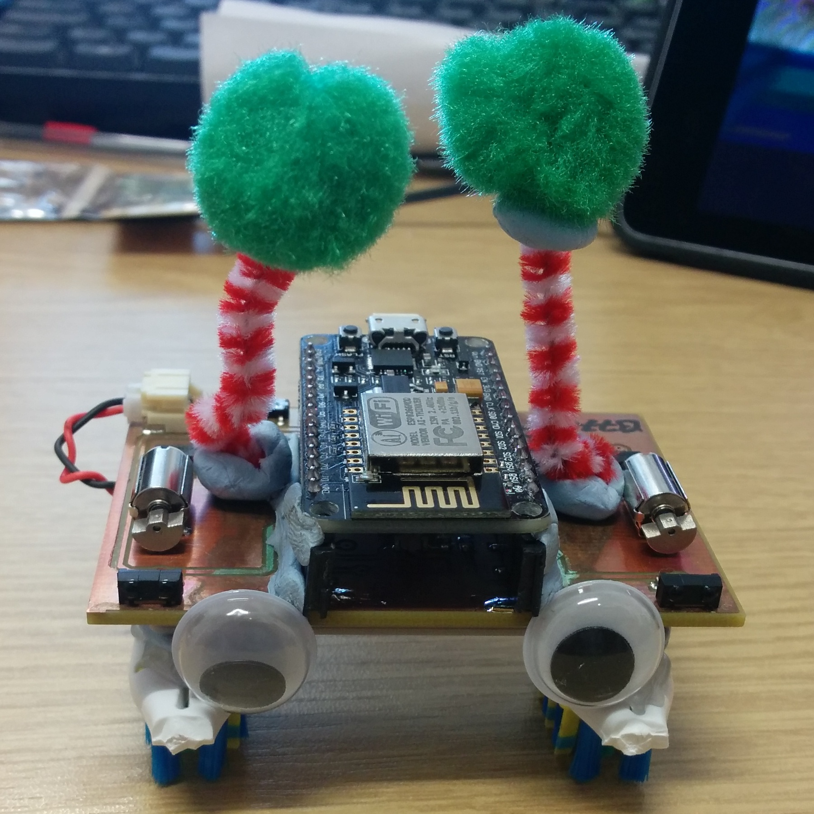

The IoT BristleBot is a WiFi enabled bristlebot that you can monitor and control over a Wifi connection. The bristlebot can be connected to the internet so that it can report is status and receive control information over an internet connection. As such it is an Internet of Things (IoT) device.
The IoT BristleBot has been developed to show how Engineers are able to take a fairly simple system, in this case a vibrating motor and tooth brush head that only provides forward motion without control over the direction of travel, and by adding electronic sensors, control and communication, develop a system that can be driven in a controlled manner wherever you want it to go (except in reverse - BristleBots don't do reverse) or even drive itself autonomously. It illustrates the power of using software based electronic control and calibration, to turn what seem to be uncontrollable systems into systems that can be easily driven in an intuitive manner.
A bristlebot is a small robot, that sits on a tooth brush head and uses the vibrations from a vibration motor to propel the BristleBot forwards. It makes use of a vibration motor that is typically used to provide vibrating alerts in mobile phones.
Standard bristlebots simply run the vibration motor at constant speed. The IoT bristlebot uses a microcontroller to allow the motor speed to be controlled. Rather than using just one toothbrush head and a single vibration motor, the IoT BristleBot has two toothbrush heads and two vibration motors that can be independently controlled by the microcontroller. In addition the microcontroller has an integrated WiFi radio which lets you communicate with the BristleBot using any WiFi enabled device, such as a laptop or smart phone. The IoT BristleBot is configured as a Wireless Access point which you can connect to and then use your browser to access the web App tjat is on the BristleBot.
Use the links below to get started with programming the IoT BristleBot, use the wiki for help and support or just try the web App
Latest Release
Get the latest BristleBot Sketches and Preconfigured Arduino IDE
BristleBot Wiki
Getting started user guide and other information
BristleBot App Demo
Try out the BristleBot App